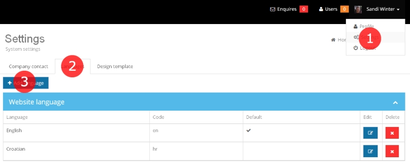

Thank you for purchasing my application. If you have any questions that are beyond the scope of this help file, please feel free to email via my user page contact form. Thanks so much!
Applications supports 3 modes:
After first configuration, you can change mode in "application/config/cms_config.php", variable $config['app_type'].
PHP version 5.1.6 or newer
MySQL (4.1+)
If you want to change database, you can found configuration in "/application/config/production/database.php".
// Examples: default, mysql $active_group = 'mysql'; $db['mysql']['hostname'] = 'localhost'; $db['mysql']['username'] = ''; $db['mysql']['password'] = ''; $db['mysql']['database'] = ''; $db['mysql']['dbdriver'] = 'mysql'; $db['mysql']['dbprefix'] = ''; $db['mysql']['pconnect'] = FALSE; $db['mysql']['db_debug'] = FALSE; $db['mysql']['cache_on'] = FALSE; $db['mysql']['cachedir'] = ''; $db['mysql']['char_set'] = 'utf8'; $db['mysql']['dbcollat'] = 'utf8_general_ci'; $db['mysql']['swap_pre'] = ''; $db['mysql']['autoinit'] = TRUE; $db['mysql']['stricton'] = FALSE;
MySQL Example is available, but you can change to PostgreSQL or other supported.
Codeigniter supports: MySQL (4.1+), MySQLi, MS SQL, Postgres, Oracle, and ODBC.
More details about database configuration you can find at: http://ellislab.com/codeigniter/user-guide/database/configuration.html
Currently available and tested languages are: croatian, english
If you want to add a new language for backend, it is necessary to copy one of languages folder inside
"/application/language" (just cca. 270 lines to translate) and "/system/language" (* might be already translated)
change folder name and translate the files within the directory.
If you want to add a new language for frontend, it is necessary to copy one of languages folder inside
"/application/language" (can stay in english if you don't need it in backend), "/system/language" (* might be already translated) and "/templates/{theme}/language" (just cca. 40 lines to translate).
change folder name and translate the files within the directory.
And in all "backend_base_lang.php" language files add new language if not exists at line after 27. for example:
$lang['canadian'] = "Canadian";
In Admin interface add language:

You can find more about codeigniter translations at: http://ellislab.com/codeigniter/user-guide/libraries/language.html
There is example theme available in the directory "/templates/{theme}".
There will be best to copy and modify one of example templates.
Template language files can be found at "/languages/{language_name}" folder.
How to use?
Application use Standard simple Codeigniter Template Parser Class:
http://ellislab.com/codeigniter/user-guide/libraries/parser.html
Variable pairs example:
{slideshow_images}
<img src="{url}" />
{/slideshow_images}
And alternative PHP syntax also can be used:
<?foreach(slideshow_images as $img):?>
<img src="<?=$img['url']?>" />
<?endforeach;?>
All about parameters, you will find in next sections.
You can switch theme in Administration interface, Page template can be switched on page editing:
Parameters usable in page_* files.
Standard page parameters:
{page_id}
{page_slug}
{page_navigation_title}
{page_title}
{page_keywords}
{page_description}
{page_body}
{page_template}
{lang_code}
{page_current_url}
{homepage_url}
{ajax_load_url}
Component parameters:
Parameters that represents sub-templates in "/components" folder, for example:
{template_head}
Language parameters:
Language fields can be entered in "/language/{language}/frontend_template_lang.php" file and used as language parameter, for example:
{lang_#} // # represents key in PHP array
// Examples
{lang_DateASC}
{lang_DateDESC}
{lang_Noestates}
Slideshow parameters:
{slideshow_images}
{num} //returns image num 0,1,2...n
{first_active} //returns "active" if this is first image
{url}
{/slideshow_images}
Settings parameters:
There is standard settings parameter that just return string, {settings_#} and {has_settings_#} that can be used to check if parameter is not empty string.
{settings_address}
{settings_gps}
{settings_email}
{settings_template}
{settings_tracking}
{settings_address_footer}
{settings_phone}
{settings_fax}
{settings_email}
{has_settings_address} ... {/has_settings_address}
{has_settings_gps} ... {/has_settings_gps}
{has_settings_email} ... {/has_settings_email}
{has_settings_template} ... {/has_settings_template}
{has_settings_tracking} ... {/has_settings_tracking}
Other widgets and helpers parameters:
{print_menu} // print main menu
{print_lang_menu} // print lang menu
{year} // return year
{lang_code} // return lang code
First real estates results to show on homepage or other pages:
{has_no_results}
Message that no results found
{/has_no_results}
{results}
{thumbnail_url}
{url} // url to property page
{address}
{data}
{gps}
{repository_id}
{is_featured}
{option_#} // # represents key of option, can be found in Admin->Estates->Options
{options_name_#} // where each option have #num before name
{/results}
{pagination_links} // return pagination links
Real estates for map on top:
{all_estates_center} // Calculated map center coordinates
{all_estates}
{gps} // Coordinates
{thumbnail_url}
{address}
{option_#} // # represents key of option
{url}
{/all_estates}
Search form parameters:
{purpose_rent_active} // return "active" if template filename contains rent
{purpose_sale_active} // return "active" if template filename contains sale
{options_name_#} // Option names
{options_values_#} // Option values for <select><option>
// # represents key of option, can be found in Admin->Estates->Options
// where each option have #num before name
//Usable lang parameters
{lang_Sale}
{lang_Rent}
{lang_CityorCounty}
{lang_Search}
Agents:
{all_agents}
{image_url}
{name_surname}
{phone}
{mail}
{address}
{/all_agents}
Page images and documents:
{has_page_images}
{page_images}
{url}
{filename}
{thumbnail_url}
{/page_images}
{/has_page_images}
{has_page_documents}
{page_documents}
{url}
{filename}
{/page_documents}
{/has_page_documents}
Contact form based on Administration settings:
{validation_errors}
{form_sent_message}
{form_error_firstname} // return "error", usable for error class on input
{form_value_firstname} // return value for specific input, on validation error
{form_error_email}
{form_value_email}
{form_error_phone}
{form_value_phone}
{form_error_message}
{form_value_message}
//Other usable
{has_settings_email} ... {/has_settings_email}
{page_current_url}
If you want to add more, currently not available data to template you can edit "application/controllers/frontend.php", index method. Just add data to $this->data array and it will be available with {array_key}.
More about tamplates and about codeigniter you can found at CodeIgniter user guide http://ellislab.com/codeigniter/user-guide/libraries/parser.html
Parameters usable in property file.
Standard page parameters, based on property data:
{page_id}
{page_slug}
{page_navigation_title}
{page_title}
{page_keywords}
{page_description} // Property description
{page_body} // Property content
{page_template}
{lang_code}
{page_current_url}
{homepage_url}
{ajax_load_url}
{estate_image_url} // first property image
{estate_data_gps}
{estate_data_address}
{estate_data_id}
Component parameters:
Parameters that represents sub-templates in "/components" folder, for example:
{template_head}
Language parameters:
Language fields can be entered in "/language/{language}/frontend_template_lang.php" file and used as language parameter, for example:
{lang_#} // # represents key in PHP array
// Examples
{lang_DateASC}
{lang_DateDESC}
{lang_Noestates}
Slideshow parameters (for property):
{slideshow_images}
{num} //returns image num 0,1,2...n
{first_active} //returns "active" if this is first image
{url}
{/slideshow_images}
Settings parameters:
There is standard settings parameter that just return string, {settings_#} and {has_settings_#} that can be used to check if parameter is not empty string.
{settings_address}
{settings_gps}
{settings_email}
{settings_template}
{settings_tracking}
{settings_address_footer}
{settings_phone}
{settings_fax}
{settings_email}
{has_settings_address} ... {/has_settings_address}
{has_settings_gps} ... {/has_settings_gps}
{has_settings_email} ... {/has_settings_email}
{has_settings_template} ... {/has_settings_template}
{has_settings_tracking} ... {/has_settings_tracking}
Other widgets and helpers parameters:
{print_menu} // print main menu
{print_lang_menu} // print lang menu
{year} // return year
{lang_code} // return lang code
Real estates for map on top:
{all_estates_center} // Calculated map center coordinates
{all_estates}
{gps} // Coordinates
{thumbnail_url}
{address}
{option_#} // # represents key of option
{url}
{/all_estates}
Search form parameters:
{options_name_#} // Option names
{options_values_#} // Option values for <select><option>
// # represents key of option, can be found in Admin->Estates->Options
// where each option have #num before name
//Usable lang parameters
{lang_Sale}
{lang_Rent}
{lang_CityorCounty}
{lang_Search}
Property images:
{has_page_images}
{page_images}
{url}
{filename}
{thumbnail_url}
{/page_images}
{/has_page_images}
Enquire form based on agent Administration settings:
{validation_errors}
{form_sent_message}
{form_error_firstname} // return "error", usable for error class on input
{form_value_firstname} // return value for specific input, on validation error
{form_error_email}
{form_value_email}
{form_error_phone}
{form_value_phone}
{form_error_address}
{form_value_message}
{form_error_message}
{form_value_message}
//Other usable
{has_settings_email} ... {/has_settings_email}
{page_current_url}
Property options/amenities:
{category_options_#} // # represents key of category option
{is_checkbox} // if type is checkbox
{option_value}
{option_name}
{/is_checkbox}
{is_dropdown} // if type is dropdown
{option_value}
{option_name}
{/is_dropdown}
{is_text} // if type is text
{option_value}
{option_name}
{/is_text}
{/category_options_#}
// You can also access directly to option:
{estate_data_option_#} // # represents key of option
Property agent data:
{has_agent}
{agent_name_surname}
{agent_phone}
{agent_mail}
{agent_address}
{agent_image_url}
{/has_agent}
If you want to add more, currently not available data to template you can edit "application/controllers/frontend.php", property method. Just add data to $this->data array and it will be available with {array_key}.
More about tamplates and about codeigniter you can found at CodeIgniter user guide http://ellislab.com/codeigniter/user-guide/libraries/parser.html
Parameters usable in results file.
Language parameters:
Language fields can be entered in "/language/{language}/frontend_template_lang.php" file and used as language parameter, for example:
{lang_#} // # represents key in PHP array
// Examples
{lang_DateASC}
{lang_DateDESC}
{lang_Noestates}
Real estates results to show:
{has_no_results}
Message that no results found
{/has_no_results}
{results}
{has_view_grid} // for grid view
{thumbnail_url}
{url} // url to property page
{address}
{data}
{gps}
{repository_id}
{is_featured}
{option_#} // # represents key of option, can be found in Admin->Estates->Options
{option_chlimit_#} // character limit for description to show in results
{options_name_#} // where each option have #num before name
{/has_view_grid}
{has_view_list} // for list view
{thumbnail_url}
{url} // url to property page
{address}
{data}
{gps}
{repository_id}
{is_featured}
{option_#} // # represents key of option, can be found in Admin->Estates->Options
{options_name_#} // where each option have #num before name
{/has_view_list}
{/results}
{pagination_links} // return pagination links
View options
{view_grid_selected} // returns selected if view is grid type, usable for css class
{view_list_selected} // returns selected if view is list type
{order_dateASC_selected} // returns selected if dateASC order type is selected, usable for css class
{order_dateDESC_selected} // returns selected if dateDESC order type is selected, usable for css class
If you want to add more, currently not available data to template you can edit "application/controllers/frontend.php", ajax method. Just add data to $this->data array and it will be available with {array_key}.
More about tamplates and about codeigniter you can found at CodeIgniter user guide http://ellislab.com/codeigniter/user-guide/libraries/parser.html
If you want best seo principles like just content title in URL, without "index.php" in URI, you need to:
Rename "seo.htaccess" file to ".htaccess".
In "application/config/config.php" change:
$config['index_page'] = 'index.php';
to
$config['index_page'] = '';
Application also support XML sitemap, URL for sitemap: your-domain.com/sitemap.xml
The system supports JSON API interface for easy connectivity with other applications.
URL: your-domain.com/index.php/frontend/ajax/{lang_code}/{page_id}/{pagination_offset}
JSON main results:
{
print: "HTML for print"
order: "Order info"
lang_id: "Language id"
results: [array of real estates objects]
}
Real estates object
{
id
gps
is_featured
address
repository_id
date
option_#
}
Knowledge of the CodeIgniter PHP Framework is required.
CodeIgniter is a very simple framework with the best documentation ever seen, so you can easy learn it.
Look at http://ellislab.com/codeigniter/user-guide
You can also change local path in index.php, line 24 to select ENVIRONMENT configuration.
I've used the following files and services as listed:
Thank you so much for purchasing this application. I'd be glad to help you if you have any questions relating to this app. No guarantees, but I will do my best to help.